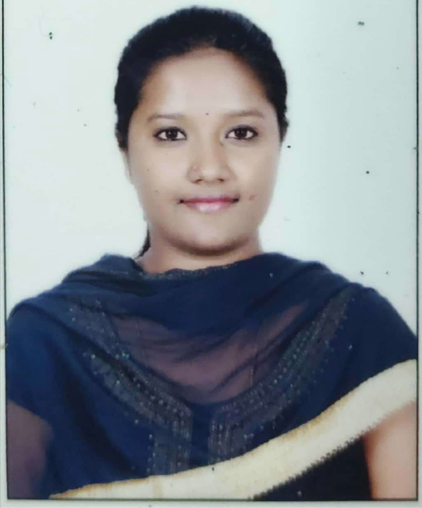

Priyanka G
H4-EAD, No VISA sponsorship required, authorized to work immediately for any employer in USA

Summary
Unique combination of technical expertise, relevant industry experience, exceptional problem-solving abilities, effective communication and collaboration skills and a proven track record of delivering successful outcomes
Skills
AWS, Networking, SAN, Linux, SQL, Replication
VMware, Python, Disaster, Recovery
Education
Bachelors in Engineering
CiTech : Visvesvaraya Technological University
06/2012 - 06/2016
Work Experience
Senior Engineer
Dell Technologies,India 05/2022 - 04/2023
Known for its wide range of hardware, software, and IT solutions.
- Played a key role in solution design and planning for complex issues, leveraging deep product knowledge and experience to develop effective strategies.
- Collaborated closely with field support and deployment teams during disaster recovery (DR) deployments, ensuring seamless coordination and communication to meet customer needs.
- Demonstrated expertise in the product, actively supporting customers and sales teams by providing technical guidance, troubleshooting assistance, and prompt issue resolution.
- Took a proactive approach to problem-solving by reproducing complex issues, analyzing data, and collaborating with Engineering and Development teams to share valuable insights for successful resolution.
- Actively contributed to the technical knowledge database, creating in-depth knowledge base articles and promptly addressing documentation bugs to improve the overall quality and accessibility of resources.
- Leveraged expertise and experience to deliver RecoverPoint (RP) training sessions to other teams, fostering cross-team collaboration, knowledge sharing, and professional development.
TSE I & II - RecoverPoint
DELL EMC ,India 09/2016 - 04/2022
Specializes in data storage, information security, and cloud computing solutions.
- Assisted in the implementation and configuration of RecoverPoint/RP4VM, ensuring proper setup and functionality.
- Addressed basic product feature issues, performing software and repository upgrades to enhance product performance and stability.
- Supported troubleshooting efforts by actively engaging in live log debugging and conducting thorough offline log investigations.
- Contributed to identifying root causes of issues, collaborating with senior team members to implement appropriate resolutions and prevent future occurrences.
- Monitored system performance metrics, collecting and analyzing data to identify areas for improvement and provide recommendations.
- Actively contributed to documentation efforts, creating and maintaining a comprehensive knowledge base for team reference, promoting knowledge sharing and efficiency.
Certifications
- AWS Certified Solutions Architect -Associate
Amazon Web Services
- VMware Certified Professional Data Center Virtualization
VMware
- The Ultimate MySQL Bootcamp
Udemy
- Specialist - Implementation Engineer, RecoverPoint Version 2.0
DELL EMC
- Associate - Information Storage and Management Version 3.0
DELL EMC
Achievements
- Game Changer Award
For achieving the highest CSAT in India COE!
- EMEA Champion award
Regional Recognition
- Top Knowledge Base Contributor
Technical Expertise
- Quarterly Performance Award
Consistency
- CSAT Award
100% CSAT
Hobbies
Contact